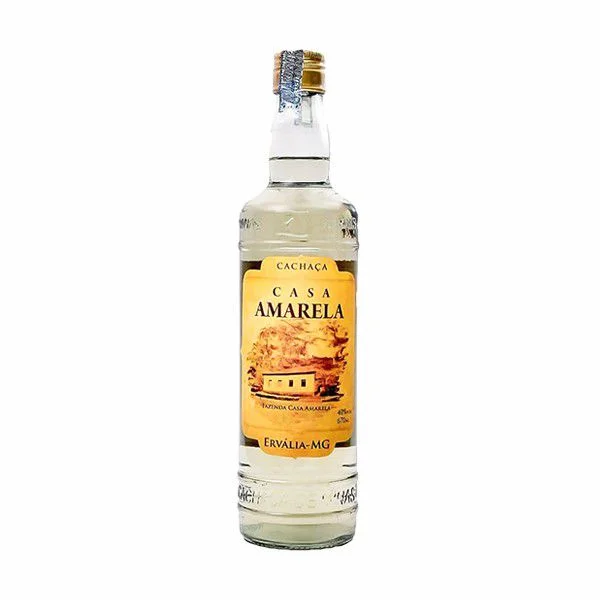

Cachaça Casa Amarela
Com uma tradição de mais de 30 anos, a Cachaça “Casa Amarela” é produzida e engarrafada por Bolivar de Matos na “Fazenda Casa Amarela” situada no município de Ervália/MG, na Serra do Brigadeiro (extremo norte da Serra da Mantiqueira). A destilação é feita em alambique de cobre, após é armazenada em dornas de amendoinzeiro (madeira neutra) que não interfere na cor e no paladar e em dornas e tonéis de carvalho, que conferem à Casa Amarela uma tonalidade levemente amarelada, originando ca Casa Amarela “ouro”.